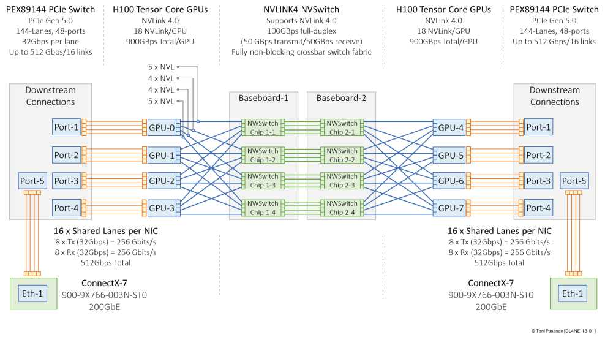
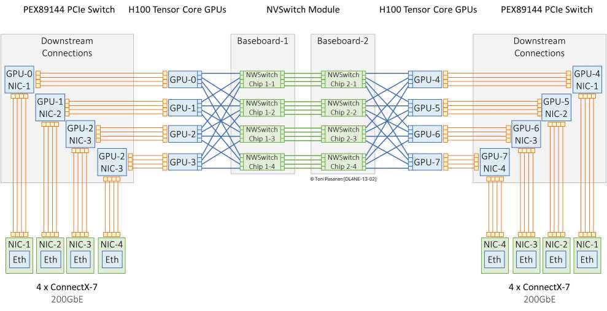

多 GPU 共用一两块 NIC，机内先抢 PCIe/NIC 出口，再抢 Fabric。优点省卡省口；缺点 incast + 单点 + noisy neighbor，AllReduce 稍大就排队。书 p293 小规模/推理可接受，训练慎用。
一 GPU 一 NIC（甚至双口），GPU0→Rail A、GPU1→Rail B……，流量天然分 Rail，故障域隔离，带宽 1:1。代价卡多、口多、线多、钱多。书 p296-299 是主流训练标配。记住：NIC 要贴着 GPU（PCIe 亲和），别跨 NUMA。
NVLink 机内 900GB/s，PCIe Gen5 x16 约 64GB/s，网 400G 约 50GB/s——机内快、出去慢，出向设计决定上限。网工排查先看 PCIe 计数器再看 Fabric。


画两种 I/O 对比，标出瓶颈点。